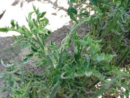

Tomato Yellow Leaf Curl Virus Disease (TYLCV)
Tomato Yellow Leaf Curl Virus Disease (TYLCV)
{kind=link}
{kind=link}
{kind=link}
Geographical Distribution in Africa
Geographical Distribution of Tomato Yellow Leaf Curl Virus Disease in Africa(red marked)
Tomato Yellow Leaf Curl Virus Disease is widely spread and extremely severe in Somalia.
General Information on Disease and Damage
Damage
The virus affects yields by greatly reducing the number of fruit produced. Fruit developing at the time of infection remain on the plant, but very few fruit will set once infection has occurred.
|  |
| Tomato yellow leaf curl virus. Note thickened shoots. |
| (c) A.A. Seif, icipe |
The disease can be easily recognised when tomato plants are infected at the seedling stage. TYLCV causes severe stunting of young leaves and shoots, resulting in bushy growth of infected seedlings. Tomato plants infected early in the season are normally stunted and excessively branched. Such plants have terminal and axillary shoots erect while leaflets are reduced in size and abnormal in shape.
Affected leaves are curled upwards or inwards. Flower drop is common, and therefore infected plants have a reduced number of flowers and fruit. If infection takes place at a later stage of growth, fruits already present develop normally. There are no noticeable symptoms on fruits derived from infected plants. Generally, table tomatoes are severely affected by the disease, especially when infection occurs before the flowering stage.
Host range
Although TYLCV has a broad host range, it is primarily known as one of the most damaging viruses to infect tomatoes. Beans (Phaseolus vulgaris) are also hosts of TYLCV and show severe symptoms after infection by whiteflies.
The virus has been reported from non-solanaceous plants like sesame (Sesamum indicum), asthma weed (Euphorbia geniculata), fleabane (Conyza stricta) and oxalis (Oxalis corniculata and O. acetosella).
Affected plant stages
Seedling stage, generative and vegetative growing stage.
Affected plant parts
Leaves, stems and whole plant.
Symptoms on affected plant part
Leaves: stunting, bushy growth; reduced size; abnormal forms.
Flowers: drop.
Stems: abnormal growth.
Whole plant: dwarfing.
Biology and Ecology of the TYLCV Disease
Source of infection and spread
The tomato yellow leaf curl virus is not seed-borne and is not transmitted mechanically. The disease is spread by whiteflies (Bemisia tabaci). Whiteflies have a wide host range. New plant growth attracts whiteflies, which feed on the lower leaf surface. It takes about 15-30 minutes for the whitefly to become infected by the virus. The incubation period is 21-24 hours, and the transmission period at least 15 min.
- High temperatures, and low or no rainfall
- Presence of whiteflies
- Infected transplants
- Weedy fields
Pest and Disease Management
Pest and disease management: General illustration of the concept of Infonet-biovision
This illustration shows the methods promoted on infonet-biovision. The methods shown at the top have a long-term effect, while methods shown at the bottom have a short-term effect. In organic farming systems, methods with a long-term effect are the basis of crop production and should be of preference. On the other hand methods with a short-term effect should be used in emergencies only. On infonet we do not promote synthetic pesticides.
Cultural practices
- Avoid continuous growing of tomato. Practice crop rotation by planting crops that are not susceptible to whitefly.
- Use resistant/ tolerant varieties, e.g. 'Amareto', 'Peto 86', 'Fiona F1', 'Perlina', 'Denise', 'Cheyenne (E448)', 'Rover'.
- Mulch the seedbeds.
- Protect seedbeds with a white nylon net (40 mesh).
- Pull out diseased seedlings.
- Protect seedlings from whiteflies (for more information on whiteflies click here
- Plant barrier crops like maize around tomato fields. These crops should be sown a month or two before transplanting of tomato.
- Mulch tomato fields with sawdust or straw.
- Immediately remove infected-looking plants and bury them.
- Do not plant cotton near tomato and/or other crops susceptible to whiteflies or vice versa.
- Eradicate weeds.
- Plough-under all plant debris after harvest or burn them when possible
Information Source Links
- CABI (2005). Crop Protection Compendium, 2005 Edition. (c) CAB International Publishing. Wallingford, UK. www.cabi.org
- Dobson, H., Cooper, J., Manyangarirwa, W, Karuma, J. and Chiimba, W. (2002). Integrated Vegetable Pest Management - Safe and sustainable protection of small-scale brassicas and tomatoes. Natural Resources Institute, University of Greenwich, UK. ISBN: 0-85954-536-9
- Food and Fertilizer Technology Centre for Asian and Pacific Region (1986). Plant Virus Diseases of Horticultural Crops in the Tropics and Subtropics. FFTC Book Series No. 33, Taiwan, Republic of China
- OISAT. Organisation for Non-Chemical Pest Management in the Tropics. www.oisat.org
- Varela, A.M., Seif, A.A. and Lohr, B. (2003). A Guide to IPM in Tomato Production in Eastern and Southern Africa. ICIPE, Nairobi, Kenya. ISBN: 92 9064 149 5 www.icipe.org
Last updated on:
| Unless otherwise stated, all content on the Infonet Biovision Website is licensed under a Creative Commons License | Disclaimer |